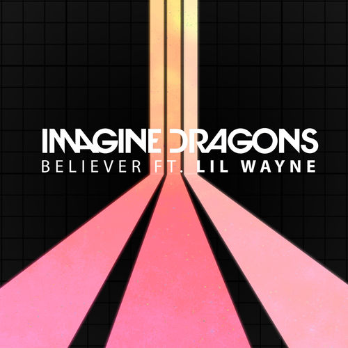
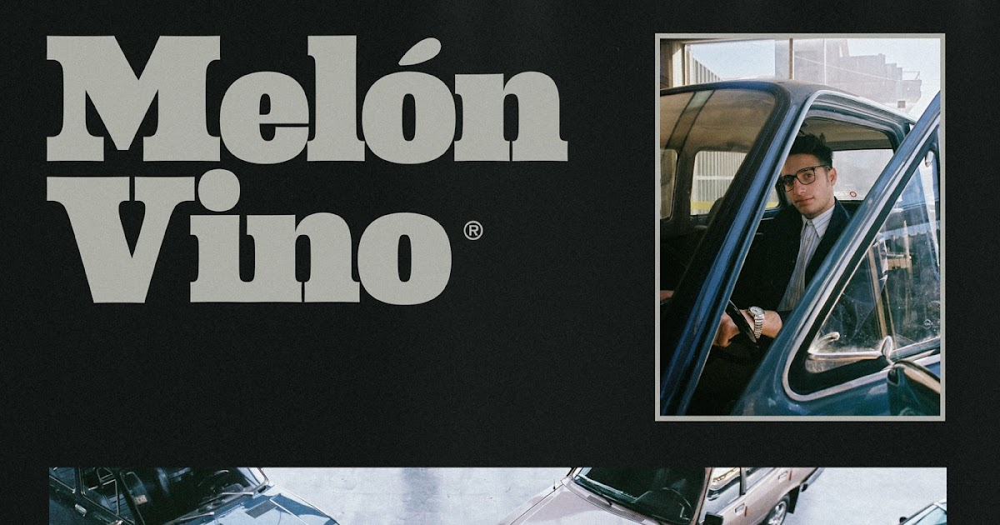

Believer
Letra de cancion de Imagine Dragons 3 de julio del 2021
First things first
I'ma say all the words inside my head
I'm fired up and tired of the way that things have been, oh-ooh
The way that things have been, oh-ooh
Second thing second
Don't you tell me what you think that I could be
I'm the one at the sail, I'm the master of my sea, oh-ooh
The master of my sea, oh-ooh
I was broken from a young age
Taking my sulking to the masses
Writing my poems for the few
That look at me, took to me, shook to me, feeling me
Singing from heartache from the pain
Taking my message from the veins
Speaking my lesson from the brain

LEER MAS
Melon Vino
Letra de cancion de amor 3 de julio del 2021
Estoy sentado esperando que se pase el rato
Estas palabras se parecen a mi autorretrato
Ey, hoy ya no quiero hablar
Si las sensaciones que en serio cambiaron mi vida
No creo que las pueda explicar
Voy a amarte y tocarte
Solo te pido que no me apuñales
Cuando abra mi cuerpo pa' darte un lugar
Y el mar se va con mis secretos
Los va a llevar marea adentro
Siempre vuelvo con mi sombra
Te invito a que la conozcas
Me revuelco con mi sombra
Te pido que no la rompas

LEER MAS
Love Me Like You Do
Letra de cancion de amor 3 de julio del 2021
You're the light, you're the night
You're the color of my blood
You're the cure, you're the pain
You're the only thing I wanna touch
Never knew that it could mean so much, so much
You're the fear, I don't care
'Cause I've never been so high
Follow me to the dark
Let me take you pass the satellites
You can see the world you brought to life, to life
So love me like you do, lo-lo-love me like you do
Love me like you do, lo-lo-love me like you do
Touch me like you do, to-to-touch me like you do
What are you waiting for?

LEER MAS